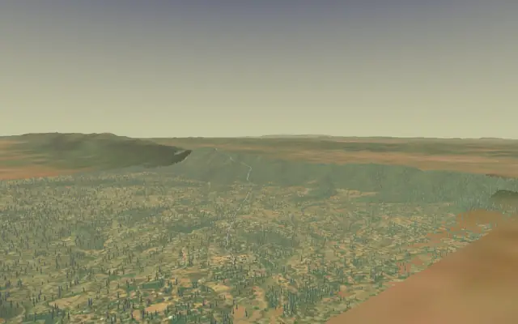

22 treks
Treks whose sources call December, January or February their best months.
| Trek | Highest point | Days on trail | Difficulty | Best months |
|---|---|---|---|---|
| Kalsubai | 1,646 m | 2 | Easy | Oct–Mar |
| Rajmachi | 826 m | 2 | Easy | Jun–Sep, Nov–Mar |
| David Scott Trail | 1,829 m | 2 | Easy | Oct–Apr |
| Sandhan Valley | Canyon | 3 | Easy | Oct–Mar |
| Dayara Bugyal | 3,750 m | 5 | Easy | Dec–Mar |
| Har Ki Dun | 3,566 m | 7 | Easy | Sep–Dec |
| Rajgad to Torna | 1,403 m | 2 | Easy–moderate | Sep–Feb |
| Tadiandamol | 1,748 m | 3 | Easy–moderate | Sep–Feb |
| Kedarkantha | 3,810 m | 5 | Easy–moderate | Dec–Feb |
| Brahmatal | 3,734 m | 5 | Easy–moderate | Dec–Feb |
| Kudremukh | 1,892 m | 3 | Moderate | Jun–Aug, Nov–Feb |
| Kuari Pass | 3,814 m | 5 | Moderate | Dec–Feb |
| Dodital | 4,150 m | 6 | Moderate | Apr–Jun, Oct–Dec |
| Nongriat root bridges | – | 1 | Moderate–hard | Oct–Mar |
| Dholkal (Bailadila) | 914 m | 1 | Moderate–hard | Dec–Feb |
| Kumara Parvatha | 1,712 m | 3 | Moderate–hard | Oct–Feb |
| Agasthyarkoodam | 1,868 m | 3 | Moderate–hard | Jan–Feb |
| Meesapulimala | 2,640 m | 2 | Hard | Sep–Mar |
| Pangarchulla | 4,590 m | 7 | Hard | Mar–Apr, Oct–Dec |
| Chadar | 3,399 m | 9 | Hard | Jan |
| Goechala | 4,602 m | 10 | Hard | Mar–Apr, Oct–Dec |
| Nag Tibba | 3,022 m | 3 | Not graded | Dec–Mar |

Easy · 2 daysPhoto: Mvkulkarni23, CC BY-SA 3.0
Kalsubai
▲ 1,646 m · Best Oct–Mar
Easy · 2 daysPhoto: Mukundvg1942, CC BY-SA 4.0
Rajmachi
▲ 826 m · Best Jun–Sep, Nov–Mar
Easy · 2 daysPhoto: Arshiya Urveeja Bose, CC BY 2.0
David Scott Trail
▲ 1,829 m · Best Oct–Apr
Easy · 3 daysPhoto: Rupaksane, CC BY-SA 4.0
Sandhan Valley
Canyon · Best Oct–Mar
Easy · 5 daysPhoto: Mike Prince from Bangalore, India, CC BY 2.0
Dayara Bugyal
▲ 3,750 m · Best Dec–Mar
Easy · 7 daysPhoto: Metanish, CC BY-SA 4.0
Har Ki Dun
▲ 3,566 m · Best Sep–Dec
Easy–moderate · 2 daysPhoto: Tokendra, CC BY-SA 4.0
Rajgad to Torna
▲ 1,403 m · Best Sep–Feb
Easy–moderate · 3 daysPhoto: Vinayaraj, CC BY-SA 4.0
Tadiandamol
▲ 1,748 m · Best Sep–Feb
Easy–moderate · 5 daysPhoto: Kanthi Kiran, CC BY-SA 4.0
Kedarkantha
▲ 3,810 m · Best Dec–Feb
Easy–moderate · 5 daysPhoto: Arijit95jitu, CC BY-SA 4.0
Brahmatal
▲ 3,734 m · Best Dec–Feb
Moderate · 3 daysPhoto: Dhruvaraj S from India, CC BY 2.0
Kudremukh
▲ 1,892 m · Best Jun–Aug, Nov–Feb
Moderate · 5 daysPhoto: Sumodm, CC BY-SA 4.0
Kuari Pass
▲ 3,814 m · Best Dec–Feb
Moderate · 6 daysPhoto: Sumita Roy Dutta, CC BY-SA 4.0
Dodital
▲ 4,150 m · Best Apr–Jun, Oct–Dec
Moderate–hard · 1 dayPhoto: Arijit Sahu, CC BY-SA 4.0
Nongriat root bridges
Best Oct–Mar
Moderate–hard · 1 day
Dholkal (Bailadila)
▲ 914 m · Best Dec–Feb
Moderate–hard · 3 daysPhoto: Prashanth bhat, CC BY-SA 4.0
Kumara Parvatha
▲ 1,712 m · Best Oct–Feb
Moderate–hard · 3 daysPhoto: Ajay Kuyiloor, CC BY-SA 3.0
Agasthyarkoodam
▲ 1,868 m · Best Jan–Feb
Hard · 2 daysPhoto: Niyas8001, CC BY-SA 4.0
Meesapulimala
▲ 2,640 m · Best Sep–Mar
Hard · 7 daysPhoto: ShwethaSulegai, CC BY-SA 4.0
Pangarchulla
▲ 4,590 m · Best Mar–Apr, Oct–Dec
Hard · 9 daysPhoto: Atulbhats, CC BY-SA 4.0
Chadar
▲ 3,399 m · Best Jan
Hard · 10 daysPhoto: Ashinpt at enwiki, CC BY-SA 3.0
Goechala
▲ 4,602 m · Best Mar–Apr, Oct–Dec
Not graded · 3 daysPhoto: Paul Hamilton, CC BY-SA 2.0
Nag Tibba
▲ 3,022 m · Best Dec–MarQuestions
Which are the winter treks in india?
The Treqz atlas lists Kalsubai, Rajmachi, David Scott Trail, Sandhan Valley, Dayara Bugyal, Har Ki Dun and 16 more.
Which is the easiest of the winter treks in india?
Kalsubai: graded Easy, 2 days on the trail.
Which is the highest of the winter treks in india?
Goechala, with a highest point of 4,602 m.
Which is the shortest of the winter treks in india?
Nongriat root bridges: 1 day on the trail.